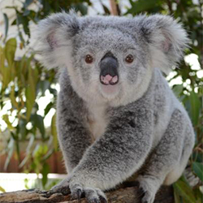
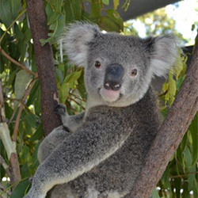
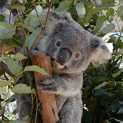
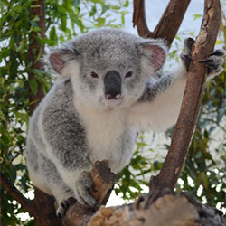
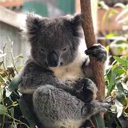
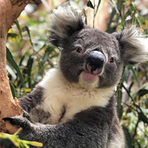

Adopt a Koala for yourself or as a gift for someone special.
For just $30 per month, you can help support a specific koala bear!
Choose from one of the Koala bears below – OR adopt multiple bears.
Binya

Sex: FemaleJoey DOB: April 10, 2017Location: Paradise Country (Gold Coast, QLD)Binya is an inquisitive little Koala whose ears make her appear continually surprised, just like her mum's. Based on trust, she's developed a strong bond with the Paradise Country keepers and often shows her appreciation for their care by gripping them tightly. Binya isn't afraid to jump in head first when it's time to feed, but her sweet and sensitive nature regularly has her opting out for a keeper inspired tummy tickle instead.Coen

Sex: MaleJoey DOB: February 28, 2018Location: Paradise Country (Gold Coast, QLD)Coen is a strong, young male who still has a lot more growing to do. Already sporting a solid physique and headstrong determination, Coen has quickly proven himself to be an independent and gutsy Koala brimming with confidence.Niley

Sex: FemaleJoey DOB: March 15, 2018Location: Paradise Country (Gold Coast, QLD)Niley is a very cheeky and mischievous Koala with a big personality. She's a chip off the old block and just like her mum. Niley loves to challenge the Paradise Country keepers by nibbling on collars and necklaces whenever she's on cuddle duty.Nooka

Sex: FemaleJoey DOB: April 19, 2018Location: Paradise Country (Gold Coast, QLD)Nooka is a delightful bundle of fluff and widely considered amongst the Paradise Country keepers as the cutest Koala of all. Her petite head and expressive ears make Nooka an animated little joey with plenty to share. Nooka is a keen eater and so appreciative of Koala cuisine that she often whinges vocally when older gum leaves are removed to make way for fresh ones.Thor

Sex: MaleJoey DOB: January 8, 2018Location: The Maze (Perth, WA)Thor was born in January 2017 and his mother is Euky, one of the stars here at The Maze! He is a very attractive little Koala and is always active at our Koala interaction times. Being Euky's first joey, Thor is a little smaller than our other males but is also the cutest looking Koala, just like a little teddy. He is shaping up well and is by far the most commented on Koala by all the Guests and he is the main attraction with our school groups, the little Koala everyone wants to adopt.Tahli

Sex: FemaleJoey DOB: June 18, 2018Location: The Maze (Perth, WA)Tahli is daughter to Mazie, full sister to Coco, born January 2017. She is one of the most inquisitive members of our Koala family here at The Maze and also one of the most photogenic! She absolutely loves interacting with our Guests and is the first of the Koalas 'up and at em' during our daily Koala experiences. Tahli is also known to have a bit of a cheeky look about her!